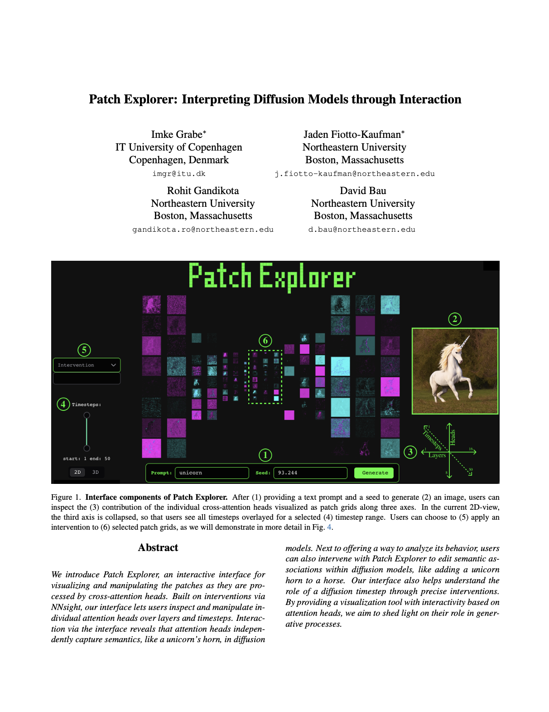
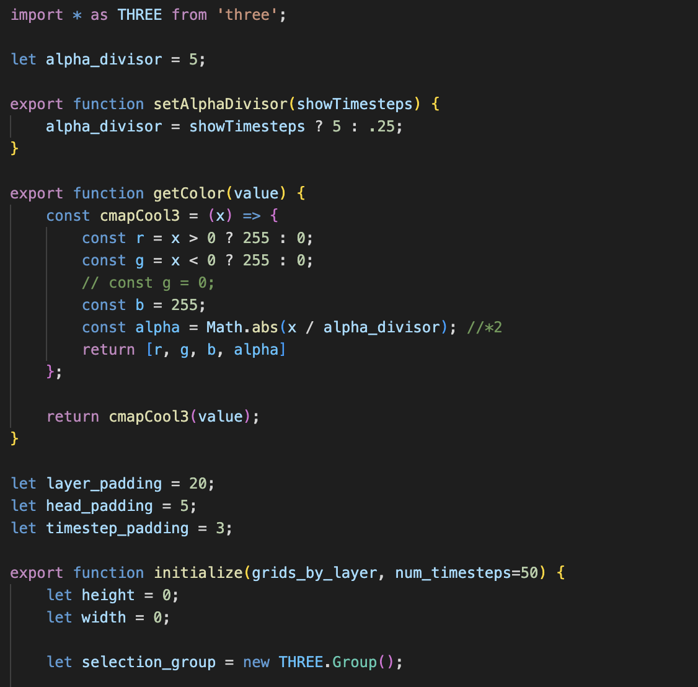
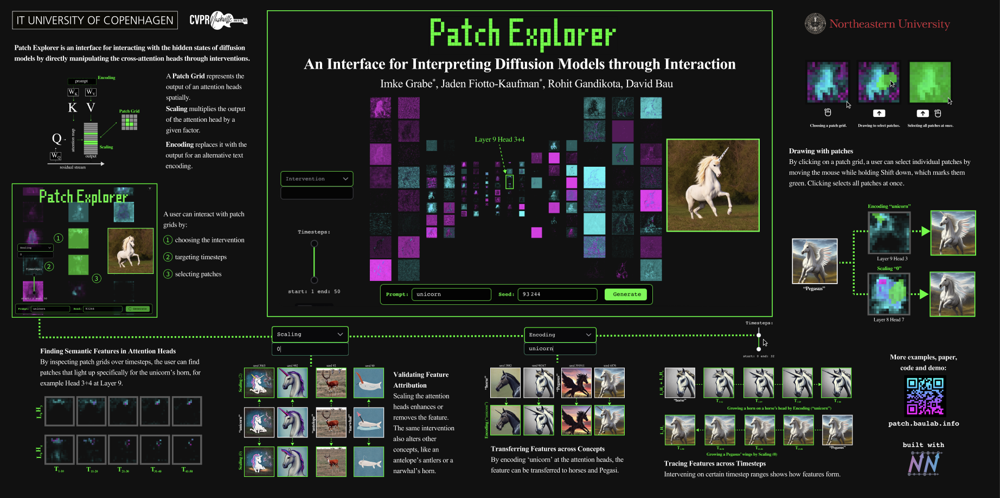
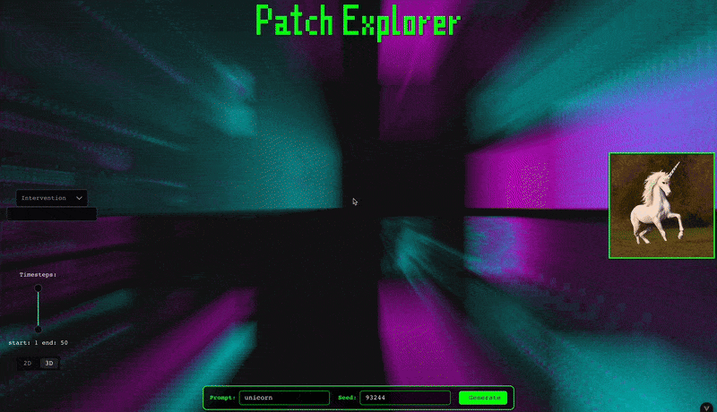
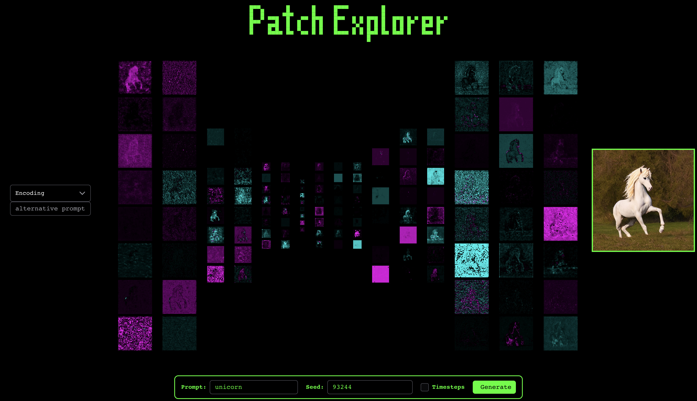

MIV @ CVPR
Workshop Paper

Source Code
Github

MIV @ CVPR
Workshop Poster

CVPR
Art Gallery

Demo
Does Interaction via Diffusion Models' Internals support Interpretabilty?
Patch Explorer is an interactive interface for visualizing and manipulating the patches as they are processed by cross-attention heads. Built on interventions via NNsight, our interface lets users inspect and manipulate individual attention heads over layers and timesteps. Interaction via the interface reveals that attention heads independently capture semantics, like a unicorn's horn, in diffusion models. Next to offering a way to analyze its behavior, users can also intervene with Patch Explorer to edit semantic associations within diffusion models, like adding a unicorn horn to a horse. Our interface also helps understand the role of a diffusion timestep through precise interventions. By providing a visualization tool with interactivity based on attention heads, we aim to shed light on their role in generative processes.
How do Diffusion Models Encode Semantic Concepts?
Latent diffusion models operate in a compressed latent space rather than directly in pixel space. The latent space is organized into patches, which are spatial units that correspond to regions in the output image. At every layer of the model's U-Net, here laid out horizontally, multiple attention heads, ordered vertically, perform the attention mechanism in parallel and over several timesteps. Patch Explorer lets users interfere in the generation process by applying interventions to the patches as they are processed.
Direct Manipulation of Cross-Attention Heads
At the core of diffusion models is the attention mechanism, which enables content-based interactions between different spatial locations. In the cross-attention layers of diffusion models, the K and V matrices are derived from text encodings, while Q comes from the image representation. We propose to target the input and output of cross-attention heads through direct manipulation.
Can we find Specific Visual Concepts through Interaction?
The interface lets users explore the role of cross-attention heads in the generation process. For example, we find that two attention heads are responsible for generating the horn on the head of a unicorn.

The attention heads can be used to transfer the visual feature to other horse-like concepts. For example, for the prompt ''Pegasus'', a unicorn horn can be added by encoding ''unicorn'' into relevant patches. Additionally, we find that the Pegasus turns into a regular horse when scaling down the influence of patches at Layer 8, Head 7, which seems to be responsible for generating its wing.
Restricting interventions to specific timestep ranges shows how features are formed throughout the generation process, like the unicorn horn on the horse' head, or the Pegasus' wings.
For a detailed usage scenario with more examples, take a look at our paper linked above.
How to cite
The paper can be cited as follows.
bibliography
Imke Grabe, Jaden Fiotto-Kaufman, Rohit Gandikota, David Bau. "Patch Explorer: Interpreting Diffusion Models through Interaction." Mechanistic Interpretability for Vision at CVPR 2025 (Non-proceedings Track).
bibtex
@inproceedings{
grabe2025patch,
title={Patch Explorer: Interpreting Diffusion Models through Interaction},
author={Imke Grabe and Jaden Fiotto-Kaufman and Rohit Gandikota and David Bau},
booktitle={Mechanistic Interpretability for Vision at CVPR 2025 (Non-proceedings Track)},
year={2025},
url={https://openreview.net/forum?id=0n9wqVyHas}
}